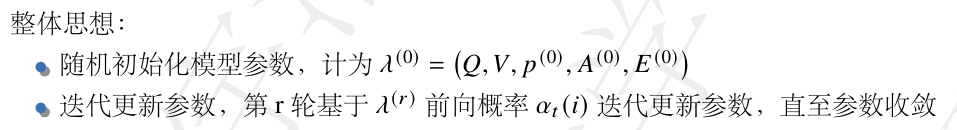
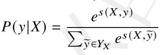
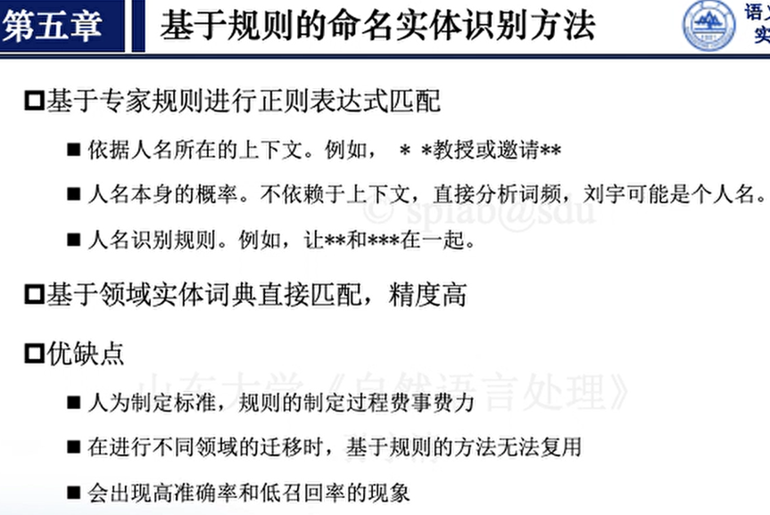

自然语言处理知识梳理
一、词汇向量化
词汇向量化
向量化是指采用计算空间的数值向量来表示离散语言文字的过程。词汇向量化是将最小语言功能单位词汇映射到计算空间的方法，并期望映射后的向量仍能保持词汇的语言学重要属性，如语义、语用或形态等。
词汇向量化方法可以分为两大类：
离散编码表示
离散向量化方法是将词汇表示成整数形式的唯一标识符，或是编码成为一个整数向量。
典型代表为独热编码，词汇向量即为词典数量对应的高维空间上的 0/1 向量。向量维度和语义是可以理解和解释的。
分布式表示
词汇分布式表示或稠密向量表示是指采用固定维度的实数向量表示词汇，多个维度共同刻画词汇语义和词汇之间的关系，如向量之间的空间距离或是余弦相似度可以表示词汇的语义关系。向量空间的每个维度不直接对应特定的含义。
词嵌入是将词汇嵌入到一个低维连续稠密空间中，其维数相比词汇总量要小得多，每个单词对应一个实数域上的向量。随着预训练词向量的普及，在自然语言处理领域的许多情形中，词向量和词嵌入两个概念互用
独热编码方式（One-Hot）：每个词汇的编码即为词汇表空间的独热向量$ { {0, 1} }^{|𝑉 |}$, 即只有当前词汇对应位置取值为“1”，其他维度均取值为零。
与词典密切相关，即词汇向量的大小和意义依据词典而不同，优点是向量可理解、可解释，缺点是高维稀疏且无法表示词汇之间的语义关系。
基于统计的词汇向量方法
依据词汇在文档中出现的上下文环境和全局语料库来构建词汇表示向量，属于分布式表示，如针对语料库中每一个文档，统计词与词、词与文档等的共现关系，形成统计矩阵来表达词汇之间语义关系，以及文档主题关系等。进而，通过矩阵分解对词汇和文本表示进行降维
“词-文档”共现矩阵与“词-词”共现矩阵类似，其中“词-文档”共现矩阵的列对应特定文档，行对应词汇，矩阵元素是对应词在特定文档中出现的频次（或由 tf-idf 值替代）
上述共现矩阵不妨表示为 𝑨𝑚×𝑛，其中词向量即为共现矩阵中的行向量，向量大小即预料中的文档数量或词汇表大小，具有高维稀疏的特点，而且不同维度存在较高相关性，很自然地选择是对其进行降维处理，采用潜在语义分析（Latent Semantic Analysis, LSA）方法。
词汇分布式表示的目标是将词向量压缩到一个低维空间 𝐷，从而可以用向量距离和余弦相似度来度量词汇之间的相关性，通常情况下向量维度远远小于词汇表大小。每一维度可以表示特定词汇性质或是几个维度联合表示一个词汇性质。
矩阵的奇异值分解 (Singular Value Decomposition, SVD)方法是选择最大不相关维度代表矩阵蕴含信息。根据 𝚺 中的 𝑘 个较大的奇异值 𝜎𝑖 来选择 𝑼𝑚×𝑚 中的对应列向量 𝒖𝑖 作为降维后词向量的保留维度。不足之处是初始向量维度仍然为词表大小，导致 SVD 分解计算量大，并且分解后得到的向量缺乏可解释性语义。
预训练分布式词向量方法Word2Vec
词汇的语义分布假说核心思想是词汇的语义有不同纬度，其具体的语义与上下文相关，也与上下文语言相似。
CBOW 模型
通过在海量语料库上滑动窗口，计算窗口内上下文词汇和中心词汇的语义关系，进行推断，优化词向量表示。
Skip-gram 模型
输入层：输入中心词的 One-Hot 编码形式，即𝒙𝑡 = OneHot(𝑤𝑡),
训练优化：层次化 softmax 、负采样
缺点是，如果训练样本里的目标词 𝑤 是生僻词汇，那么哈夫曼树的路径很长，就会影响计算效率。
负采样：按照一定概率随机采样 𝐾 个词汇作为负例。
Word2Vec 相比于共现矩阵的统计信息更能表达词汇的语用信息，训练好的词向量可以在其他同领域任务上进行复用。缺点是它只利用了有限窗口内的上下文，而没有考虑句子全局信息。而且形成的词向量是静态向量，这种固定表示向量难以解决一词多义问题，无法根据特定场景进行动态适配和更新。
融合全局词频信息的预训练分布式词向量 GloVe 方法
GloVe 模型只训练“中心词-上下文词”共现矩阵中的非零元素，利用了词汇共现概率矩阵。另一个改进是设置了加权损失函数，以减少共现频率差异带来的问题。
Glove 模型的优点综合了以往全局统计矩阵和局部相关性两种建模方法的优点。容易实现并行计算，训练出来的词向量具有通用性，可以用于其他下游自然语言处理任务。缺点是相比Word2Vec 而言，需要耗费更多的内存资源来存储全局信息；训练出来的词向量是静态的，无法动态更新；同样难以解决一词多义的问题。
分布式词向量评估
内部评估，评价词向量是否可以反映词汇的语义信息和句法信息
外部评估依据词向量在下游任务中带来的效果进行评估
基于向量距离的最近邻方法：依据词向量之间的欧式距离。对词汇表中的每个特征进行归一化，然后计算余弦相似度
词汇类比分析方法：针对具有相同关系的两对词汇，分析其对应的词向量之差，计算两个差值之间余弦值，分析两对词之间的关系。两个差值越接近，表明词向量效果越能反映他们之间的关系。句法类比方法与词汇类比方法类似。
其他词向量方法：
基于字形态学的词向量化方法（汉字结构）
表外词词向量快速生成方法（在词向量训练过程，没有遇到该词汇）：第一类是通过多个段落训练目标新单词向量，第二类是基于子词和字符来推断目标词汇
问题思考
预训练词向量的意义。
Word2Vec 相比于共现矩阵的统计信息更能表达词汇的语用信息，训练好的词向量可以在其他同领域任务上进行复用。
在基于全局矩阵分解的词向量方法中，进行 SVD 分解的意义何在？
向量大小具有高维稀疏的特点，而且不同维度存在较高相关性，进行 SVD 分解对其进行降维处理。得到的稠密向量不仅包含了全局统计信息，而且只选择含有重要信息的少数维度，便于后续计算和分析。
Skip-gram 和 CBOW 模型的整体思想存在怎样的关系？
分别使用上下文词汇预测中心词汇，以及使用中心词汇预测上下文词汇来建模语义关系，获得词汇的低维稠密词嵌入。Skip-gram 模型可以近似看做是 CBOW 模型的逆过程。
同样是基于共现矩阵，GloVe 相比于全局矩阵分解的方法有什么优势？
采用共现概率之比可以反映全局信息统计下的单词相关性而不是传统方法中使用共现概率本身。考虑上下文的同时引入了全局信息，综合了以往全局统计矩阵和局部相关性两种建模方法的优点。
相较于离散型词向量，分布式词向量有何优势？
具有更强的语义表达能力和泛化能力，同时具有较低的维度和更高的计算效率。
负采样在实际应用中十分常用，它的基本思想是什么？
按照一定概率随机采样 𝐾 个词汇作为负例。原来模型在词汇表 𝑉 上进行的 |𝑉| 分类问题变成了 𝐾 分类问题，就解决了每次中心词汇预测过程中需要更新输出层所有向量问题。
层次化 Softmax 方法如何实现的，有何缺点？
将词典中的每个词按照词频大小构建出一棵 Huffman 树，每一个词都处于这棵 Huffman 树上的某个叶子节点，叶子节点个数即为词汇表的大小。词频较大的词处于 Huffman 树相对浅的层次，词频较低的词相应的处于 Huffman 树较深层的叶子节点。这样，将原本词汇预测对应的词汇表大小 |𝑉|的多分类问题，变成了 log |𝑉| 次的二分类问题。
如果训练样本里的目标词 𝑤 是生僻词汇，那么哈夫曼树的路径很长，就会影响计算效率。
你认为预训练词向量方法 Word2Vec 带来主要贡献有哪些？
提供了高效的词向量训练方法
学习到的词向量具有丰富的语义信息
可以进行向量运算，展现词语之间的关系
可以通过迁移学习在其他任务上取得好的效果
为词义相似度计算、词语聚类、文本分类等任务提供了强有力的工具和基础。
二、语言模型
语言模型：
N-1阶马尔可夫假设:假定文本中的每个词ωi和前面的N-1个词有关，而与更前面的词无关，对应的语言模型称为N元模型(N-Gram Model)。
n=1：nuigram
n=2：bigram（前面出现的一个词）
n=3：trigram（前面出现的两个词）
如何计算概率：在大规模语料库中统计出现的频数
三、文本序列标注
文本序列标注任务是指给定文本和预定义标签集合，对于文本中的每个元素进行标记。
三种常用文本序列标注任务：中文分词、词性标注、命名实体识别
给定专家预定义的标签集合 S，给定文本 𝑥 = 𝑥1 . . . 𝑥𝑇 ，也称为观测序列，文本序列标注任务是对于输入 𝑥中每个元素 𝑥 = 𝑥𝑖，用 S 中的标签进行标注，𝑦 = 𝑦1 . . . 𝑦𝑇 , 𝑦𝑖 ∈ 𝑆 表示标注模型的输出，也称状态序列或标记序列，将观测序列映射到标记序列的问题叫做序列标注问题。
HMM
隐马尔可夫模型（Hidden Markov Model, HMM）是一个五元组 (Q,V,p,A,E), 其中：
Q 是有限状态集，|Q|=N；
V 是观测状态的有限集，|V|=M；
p 是初始状态概率
A 是状态转移概率矩阵，其中
概率计算问题
问题 1. 给定模型 𝜆 = (𝑆,𝑉, 𝑝, 𝐴, 𝐸)、观测序列 𝑋 = (𝑥1, . . . , 𝑥𝑇 ), 及状态序列 𝑌 = (y1, . . . , 𝑦𝑇 ), 计算 𝑃(𝑋,𝑌 |𝜆)。
问题 2. 给定 𝜆 = (𝑆,𝑉, 𝑝, 𝐴, 𝐸)、观测序列 𝑋 = (𝑥1, . . . , 𝑥𝑇 )，计算模型概率 𝑃(𝑋 | 𝜆)。
此外还有动态规划算法-前向、后向，公式看不懂。
状态估计问题
问题 1. 已知模型 𝜆 = (𝑆,𝑉, 𝑝, 𝐴, 𝐸) 和观测序列 𝑋 = (𝑥1, . . . , 𝑥𝑇 ), 计算时刻 t 的状态概率 𝑃 (Yt = 𝑠𝑖 | 𝜆, 𝑋)
chat：
前向概率表示在给定观测序列的情况下，从模型的初始状态到达某一特定状态的概率。也可以理解为在时间步𝑡处于某一状态的概率。
后向概率表示在给定观测序列的情况下，从某一特定状态出发，到达模型的终止状态的概率。
问题 2. 已知模型 𝜆 = (𝑆,𝑉, 𝑝, 𝐴, 𝐸) 和观测序列 𝑋 = (𝑥1, . . . , 𝑥𝑇 ), 求 𝑌∗ = argmax𝑌 𝑃 (y1, . . . , 𝑦𝑇 | 𝜆, 𝑋)。（使得P最大的Y）
模型学习问题
问题 1. 已知观测序列 𝑋 = (𝑥1, . . . , 𝑥𝑇 ) 集合，和对应的状态数据 𝑌 = (y1, . . . , 𝑦𝑇 ) 集合，估计模型 𝜆 =(𝑆,𝑉, 𝑝, 𝐴, 𝐸) 参数，使得该模型下观测序列概率 𝑃(𝑋,𝑌 | 𝜆) 最大，即 𝜆∗ = argmax𝜆 𝑃(𝑋,𝑌 | 𝜆)。
问题 2. 已知观测序列 𝑋 = (𝑥1, . . . , 𝑥𝑇 ), 估计模型 𝜆 = (𝑆,𝑉, 𝑝, 𝐴, 𝐸) 参数，使得该模型下观测序列概率𝑃(𝑋 | 𝜆) 最大。 𝜆∗ = argmax𝜆 𝑃(𝑋 | 𝜆)

条件随机场
马尔可夫随机场是指多个随机变量的联合概率分布,也称概率无向图模型，即对于随机向量𝑌 = (y1, . . . , 𝑦𝑁 )，联合概率分布 P(𝑌) 可以表示成无向图的形式，为 G = (𝑌, 𝐸), y𝑖 对应顶点, 随机变量 y𝑖 和 y𝑗 之间的依赖关系构成边 𝑒𝑖 𝑗, 联合概率分布 P(𝑌) 满足成对、局部或全局马尔可夫性:
成对马尔可夫性：任意两个没有边连接的结点
局部马尔可夫性：点和它的“间接邻居”
团：无向图 G 中的结点子集称为团当且仅当任何两个结点均有边连接
最大团：若 C 是无向图 G 的一个团，并且不能再加进任何一个 G 的结点使其成为一个更大的团，则称此 C 为最大团
问题思考
文本序列标注问题的本质是什么？
本质上是对于词序列进行词汇功能理解，根据语义和句法分析对词序列中的每个词进行标注。
文本序列标注问题和分类问题的区别和联系是什么？
区别：文本序列标注问题是指对输入的文本进行逐个字符或单词的标注，分类问题则是给定一个文本，判断它属于哪一类。
联系：都需要对文本进行分类，但不同之处在于分类粒度不同。文本序列标注任务更加细粒度，要求对文本的每个元素进行分类，而分类问题则是对整个文本进行分类。
写出隐马尔可夫模型的要素构成和三类基本问题解决方法，给出详细的推导公式。
隐马尔可夫模型在文本序列标注问题上的优缺点有哪些？
优点：有了齐次马尔科夫假设和观测独立假设及其假设成立的场景，可以大大简化 P(Y|X) 的计算。
缺点：序列标注问题和观察序列的长度，单词的上下文等信息相关，HMM只依赖于每一个状态和它对应的观察对象，不能全面反映现实情况。隐马模型学到的是状态和观察序列的联合分布 P(Y,X)，而预测问题中，我们需要的是条件概率 P(Y|X)，目标函数和预测目标函数不完全匹配
写出条件随机场模型的要素构成，以及模型针对实例评分问题和状态解码问题的详细推导公式。
要素构成包括：
输入序列（观测序列）：𝑋 = {𝑥₁, 𝑥₂, …, 𝑥ₙ}，表示观测序列的输入。
输出序列（标记序列）：𝑌 = {𝑦₁, 𝑦₂, …, 𝑦ₙ}，表示对应于输入序列的标记序列的输出。
特征函数：𝑓(𝑦ₓ₊₁, 𝑦ₓ, 𝑋, 𝑥)，用于定义在输入序列和输出序列上的特征。特征函数是根据具体问题定义的，可以包括观测值和标记之间的关系、相邻标记之间的关系等。
参数：𝜆，用于表示特征函数的权重。
实例评分问题：
实例评分问题是指给定输入序列𝑋和输出序列𝑌，计算模型对于该实例的得分𝑠(𝑋, 𝑌)。得分越高表示模型认为该实例的输出序列𝑌更合理。
CRF模型对于给定的输入序列𝑋和输出序列𝑌的得分计算公式为：
𝑠(𝑋, 𝑌) = ∑{𝑛=1}^{𝑁} ∑{𝑘=1}^{𝐾} 𝜆ₖ * 𝑓ₖ(𝑦ₙ₊₁=𝑘, 𝑦ₙ=𝑦, 𝑋, 𝑥ₙ)
其中𝑁是输入序列的长度，𝐾是输出序列的标记个数，𝑦ₙ₊₁表示第𝑛+1个位置的标记，𝑦ₙ表示第𝑛个位置的标记，𝑥ₙ表示第𝑛个位置的观测值，𝑓ₖ是特征函数，𝜆ₖ是对应的权重。
状态解码问题：
状态解码问题是指给定输入序列𝑋，找到最可能的输出序列𝑌，即找到使得模型得分𝑠(𝑋, 𝑌)最大化的输出序列。
CRF模型中使用维特比算法（Viterbi algorithm）来解决状态解码问题。维特比算法使用动态规划的方法，通过计算局部最优解来逐步构建全局最优解。
定义局部最优解𝑉(𝑛, 𝑘)为在位置𝑛处标记为𝑘的输出序列的最大得
分，𝑉(𝑛, 𝑘)表示从位置1到位置𝑛，并且位置𝑛的标记为𝑘的输出序列的最大得分。则局部最优解的递推公式为：
𝑉(𝑛, 𝑘) = 𝑓ₖ(𝑦ₙ₊₁=𝑘, 𝑦ₙ=𝑦, 𝑋, 𝑥ₙ) + max_{𝑘’} {𝑉(𝑛-1, 𝑘’) + 𝜆ₖ’ * 𝑓ₖ’(𝑦ₙ₊₁=𝑘, 𝑦ₙ=𝑦’, 𝑋, 𝑥ₙ)}
其中𝑘’是位置𝑛-1处标记的取值，𝑦’表示位置𝑛-1处的标记，𝑓ₖ’是特征函数，𝜆ₖ’是对应的权重。
最终，状态解码问题可以通过回溯找到使得得分最大的输出序列𝑌。
条件随机场模型在文本序列标注问题上的优缺点有哪些？
优点：没有严格的独立性假设条件，因而可以容纳任意的上下文信息。特征设计灵活，适用场景更宽泛。
缺点：比隐马模型训练代价大、复杂度高。
隐马尔可夫模型和条件随机场模型的区别是什么？
条件随机场模型减弱了 HMM 中两个假设，没有严格的独立性假设条件
针对文本序列标注问题，CRF 和 LSTM 如何结合使用？
LSTM用于提取文本序列的上下文信息，而CRF用于建模标记序列的依赖关系，从而解决文本序列标注问题。
扩展思考：文本序列标注有个基本假设，即句子是序列结构，这一假设符合真实语言情况吗？文本序列标注任务对所有自然语言处理任务均是必要的吗？举例说明为什么。
句子是序列结构的假设在大多数情况下符合真实语言情况。在某些非常规的语言或语言变体中，句子的结构可能不符合严格的序列模式。
例如情感分类或垃圾邮件过滤，文本生成任务，如文本摘要或机器翻译，不是必要的。
四、中文分词
中文分词，即解决中文序列的词汇切分问题。
将字作为分词的最小单位，其粒度太小，无法表达完整意涵，而句子的粒度太大，承载的信息量多，很难复用。因此，文本理解通常以词作为基本单位，即通过分词把连续的汉字分隔成具有独立意义的词汇。
分词的挑战：
1.语言的固有歧义：交集型歧义：是指对于给定的字符序列，可以对应于多个具有字符重叠关系的常用词汇。组合型歧义：是指对于给定的字符序列，可以有不同的分割形式，分别对应于不同的意涵。真歧义：是指两种分词方式均是合理和常见的情况。
2.语言的开放性和动态性（不断出现新词）
3.语言学中的词汇规范和计算科学中的量化指标缺少直接对应
评估：
人工评价：专家评价。
外部评价：依据下游任务性能评价。
精准率：预测正确分词占所有预测分词结果的比值。
召回率：预测正确分词占真实分词结果的比值。
F-score：精准率和召回率两者的调和平均值。
IV Recall：正确识别出的词典中的词占标准分词中在词典中出现的词的比例。
OOV Recall：正确识别出的未登录词占标准分词中未在词典中出现的词的比例
基于规则的分词算法
前向最大匹配算法自左至右进行搜索，寻找词典中的最长匹配词汇。设定最大长度如 𝐿，以限定算法复杂度。如果没有找到，就缩短长度继续寻找，直到找到字典中的词或者单字。后向最大匹配算法的思想与前向最大匹配算法类似，只不过是方向相反，从后向前进行匹配。
中文 90% 左右句子，正向最大匹配法和反向最大匹配法完全重合且正确，9.0% 的句子两种切分得到的结果不一样，其中只有一个是正确的（歧义检测成功），只有不到 1.0% 的句子，使用正向最大匹配法和逆向最大匹配法的切分虽重合却是错的，或者正向最大匹配法和逆向最大匹配法切分不同但两个都不对（歧义检测失败）。
双向最大匹配算法分别执行前向最大匹配算法和后向最大匹配算法，根据各自分词结果，采用汇总策略进行判断。例如:
如果前后向算法的匹配结果相同，则任一分词结果即为最终分词结果；
如果两者匹配结果不同，且分词词数不同，则选择分词数较少的作为分词结果；
结果分词词数相同，则选择单字较少的作为分词结果；
如果词数相同且单字数也相同，则返回任意一个。
基于统计的分词算法
一种朴素的无监督评价方式是依据海量数据统计结果，选择概率最大的分词方案。
给定字符串 𝐶 = 𝐶1, 𝐶2, …, 𝐶𝑛，对应多个切分方案，构成集合 G，其中, 切分方案 𝑆 ∈ 𝐺 对应的词汇序列为：𝑆 = 𝑤1, 𝑤2, .., 𝑤𝑙，满足 𝑙 <= 𝑛。分词任务的目标转化成下式：
N 元模型在一定程度上是分词精度和计算复杂度的一种权衡，当 N 在一定范围内时，N 越大，精度越高，计算量越大。现实中，当 N 超过一定范围时，当前位置词的划分，可能已经不受到前面一些分词的影响，更多的信息反而成了噪音。
新词的相关统计指标：
内部凝固度衡量词搭配是否合理。点互信息 PMI被用来度量词搭配的凝固度。若 PMI 高，即两个词共现的频率远大于两个词自由拼接的乘积概率，则说明这两个词搭配更为合理一些：$𝑃𝑀𝐼(𝑥, 𝑦) = log\frac{𝑃(𝑥, 𝑦)}
{𝑃(𝑥)𝑃(𝑦)}$
自由运用程度衡量一个词的左邻字与右邻字的丰富程度。自由运用程度反映了文本片段外部的稳定性，外部自由度越大，该文本片段的稳定性就越高。定义文本跨度 𝑤 为候选词汇，其左字符和右字符分别为 𝑙(𝑤)、𝑟(𝑤)，自由运用程度的定义如下：
𝑓𝑟𝑒𝑒(𝑤) = 𝑚𝑖𝑛{𝐸𝑛𝑡𝑟𝑜𝑝𝑦(𝑙(𝑤)), 𝐸𝑛𝑡𝑟𝑜𝑝𝑦(𝑟(𝑤))}，即左右字符熵的小者
基于神经网络的BiLSTM+CRF
双向长短时网络 (Bi-Long Short Term Memory, BiLSTM) 是基础的序列编码网络，分别从句子顺序和句子逆序两个方向同时编码文本信息，使得编码同时包含了每个词汇的历史信息和未来信息，有利于对当前词进行标注。
BiLSTM+CRF:
1.问题描述
输入：文本序列 𝑋 = (𝑥1, 𝑥2, …, 𝑥𝑛)，其中 n 是序列包含的字符数，𝑥𝑖 代表 X 中的第 i 个字。
输出：𝑦 = (𝑦1, 𝑦2, …, 𝑦𝑛)，其中，y 是对输入的句子 X 进行预测获得的，𝑦𝑖 ∈ {𝐵, 𝑀, 𝐸, 𝑆} 是 𝑥𝑖 的预测标签。
2.基本结构
建立输入 X 和标签 y 之间的概率关联关系，主要包含两部分，一是标签之间的关系，即从时间步 𝑖 − 1 标签 𝑦𝑖 转移时间步 𝑡 标签 𝑦𝑖+1 的规律；二是每个时间步标签 𝑦𝑖 和字符 𝑥𝑖 之间映射规律，分别表示为下列𝐴𝑦𝑖,𝑦𝑖+1 和 𝑃𝑥𝑖,𝑦𝑖 两个存储变量。
其中，P 是 BiLSTM 网络部分的输出，作为完整文本序列 𝑋 的编码信息，𝑃𝑖, 𝑗 则代表句子中第 i 个单字获得 j 标记的分数。𝐴𝑖, 𝑗 代表从标记 i 到标记 j 的转移分数。
3.标签预测函数
在文本序列上的标签预测函数采用 softmax，产生序列 y 的概率。其中 𝑌𝑋 代表句子 X 的所有可能的标签序列：

4.优化目标
训练目标是将序列中字符对应正确标签概率对数最大化，即模型激励神经网络产生正确的输出序列。
5.模型推理
选择最大概率$y^*$作为序列中每个字符的预测标签，采用动态规划算法存储中间结果，可以加速算法效率。
中文分词工具：
| 工具 | 优点 |
|---|---|
| HanLP | 功能全面，性能较高，适用于多种任务场景 |
| SnowNLP | 面向中文自然语言处理，涉及任务较多 |
| LTP | 可以根据需求自由选择不同速度和指标的模型进行任务处理 |
| NLPIR | 分词速度快 |
| THULAC | 速度较快 |
问题思考
什么是中文分词？为什么要进行中文分词？如何评估中文分词结果？
解决中文序列的词汇切分问题；文本理解通常以词作为基本单位；
中文分词问题有哪些挑战？详细说明。
分别简述前向最大匹配算法和后向最大匹配算法，讨论两者在什么情况下会产生相同的分词结果，在什么情况下会产生不同的分词结果? 如何解决这种分歧？
基于统计的新词发现有哪些评价指标？
详细说明 BiLSTM-CRF 模型在分词任务上的技术细节，给出公式。
中文分词有哪些相关工具？各有什么优点和缺点？
五、命名实体识别与关系抽取
命名实体识别(Named Entity Recognition, NER) :从文本中识别预定义类型实体，并定位到该标识符，属于序列标注任务
NER属于分类任务。在信息抽取、信息检索、问答系统、机器翻译等任务中有重要应用
方法：
1.基于规则的方法

2.基于特征的监督学习方法
3.基于深度学习的方法
工具：spacy、NLTK
关系抽取：找到实体与实体之间有意义的关系，通常表示为三元组：<头实体，关系，尾实体>
传统方法：流水线式抽取，分为实体识别和抽取关系两个步骤；联合抽取，一步到位
挑战：
大部分现有的关系抽取模型基于有监督学习，依赖于大量的有标注数据，数据量不足的情况下性能无法得到保证
不同领域中关系抽取任务的数据集和抽取目标不通用，模型迁移困难
现有利用远程监督的方法获取到的数据含有较大的噪音，不利于模型的训练和收敛
作用：服务于创建结构化知识库，构建知识图谱，支持上层应用：问答、搜索、推理等
六、句法分析
句法分析是研究语言中单词和短语的组合方式，学习词汇构成句子的结构规律
句子可以细分为信息类、指令类、表达类和承诺类
句法分析技术主要分为两类：一类是转换生成语法理论，面向句子成分，分析主谓宾定状补的句法结构，并分析各成分之间的关系。另一类是依存句法分析理论，分析词汇之间的依存关系，如并列、从属、比较、递进等。
乔姆斯基重新确立了人们的语言观：
1) 语言的无限性：语言是无限的句子集合，句子长度有限，结构成分有限。
2) 语言的离散型：以有限的符号来构成无限的符号序列，任何连续的话语都可以切换为更为小的片段。
3) 语言的层次性：句子是在生成语法中被确定的，这种句子的线性特征中蕴含着层次关系
基于上下文无关文法的转换生成语法理论
自底向上分析方法：首先为每一个单词指定一个词性类别如名词、动词等。然后，依据特定语法，将词语组织建成短语 ；使用短语递归建立更复杂的结构，构成长句子。
强等价：两个语法生成相同的符号串集合，而且它们对于每一个句子都指派同样的短语结构
弱等价：两个语法生成相同的符号串集合，但是不给每一个句子都指派同样的短语结构
乔姆斯基范式文法 (CNF）：𝐴 →𝐵𝐶，𝐴 →𝛼，𝑆 →𝜖。如果每一个规则的右部是两个非终极符号，或是一个终极符号，那么这个上下文无关文法就是乔姆斯基范式的（CNF）。
CYK算法
二维矩阵 𝑃，其元素 𝑃(𝑖, 𝑗) 表示输入句子位置 𝑖 开始的跨度大小为 𝑗（即 [i,i+j]）的所有可能形成的短语的非终结符的集合，横坐标 𝑖 代表输入文本序列的当前位置，即规则覆盖文本的跨度左侧的第一个词的位置，纵坐标 𝑗 代表着跨度，即包含的字符数。
核心：对每一条规则 𝐴 → 𝐵𝐶，如果 𝐵 ∈ 𝑃(𝑖, 𝑘) 且 𝐶 ∈ 𝑃(𝑖 + 𝑘, 𝑗 − 𝑘), 那么将非终结符 𝐴 加入集合 𝑃(𝑖, 𝑗)
概率上下文无关文法
一个概率上下文无关语法 𝐺 是一个四元组：G = ( Σ, N, S, PR)，其中，Σ 表示终结符合 (terminal symbols)，𝑁 表示非终结符的集合 (non-terminals)，𝑁 ∩ Σ = ∅，𝑆 ∈ 𝑁 表示特殊的开始符号，𝑃𝑅 表示概率生成规则集合，每一个生成规则的形式为 (𝐴 → 𝛽, 𝑝)，其中 𝐴 ∈ 𝑁 是非终极符号，𝛽 是由 (Σ ∪ 𝑁) 集合中的符号构成的符号串，𝑝 ∈ [0, 1] 表示概率。
向内算法： 𝐴 → 𝐵𝐶 的内部概率 𝛼𝑖, 𝑗 (𝐴) 是指该规则生成词串 𝑊 中 𝑤𝑖, …, 𝑤 𝑗 的概率，其中 𝐵 和 𝐶 进一步推出词串 𝑊 中的单词字串 𝑤𝑖, …, 𝑤𝑘 和词串 𝑊 中的单词字串 𝑤𝑘+1, …, 𝑤 𝑗。
向内向外算法：非终结符 𝐴 的外部概率为 𝛽𝑖, 𝑗 (𝐴)，用于记录串 𝑤𝑖…𝑤 𝑗 之外的生成概率。假设 𝐴 对应的父节点为 𝐶，则有两种情况。一种是 𝐴 在父节点对应的生成规则的左边，即 𝐶 → 𝐴𝐵；一种是 𝐴 在父节点对应的生成规则的右边，即 𝐶 → 𝐵𝐴，其中 𝐵 分别对应于生成词串 𝑤 𝑗+1…𝑤𝑘 和 𝑤ℎ…𝑤𝑖−1。
计算最大概率句法的维特比算法
首先引入变量 𝛿𝑖, 𝑗 (𝐴)，表示从非终结符 𝐴 推导出 𝑊 中词串 𝑤𝑖…𝑤 𝑗 对应的最大概率。向内变量 𝛼𝑖 𝑗 (𝐴) 计算从 𝐴 产生出词串 𝑤𝑖…𝑤 𝑗的所有可能推导的概率之和。
𝑖 表示字串的起始位置，𝑗 表示字串的跨度。在循环中，计算始于位置 𝑖 的所有可能跨度即 𝑗 ∈ [1..𝑛] 的所有可能组合（即词串 [𝑖..𝑖 + 𝑗]）构成的产生式 𝐴 → 𝐵𝐶，其中 𝐵 覆盖 𝑤𝑖…𝑤𝑘，𝐶覆盖 𝑤𝑘+1…𝑤𝑖+𝑗，其生成式分别对应于概率 𝛿𝑖,𝑘(𝐵) 和 𝛿𝑘+1,𝑖+ 𝑗 (𝐶)。Δ 变量用来记录分析过程的历史。
基于期望最大化算法的模型优化（课件里没有，简单看看即可）
期望最大化算法即 EM 算法，是一种迭代算法，采用最大似然估计或极大后验估计优化模型参数，主要分为期望计算步骤，即 E 步骤，和最大化概率计算步骤，即 M 步骤。
依存句法理论
如果一个词修饰另一个词，则称修饰词为从属词，被修饰的词语称为支配词 ，两者之间的语法关系称为依存关系。承担谓语功能的动词称为句子中心。被中心动词支配的成分称为行动元，一个动词能够支配的行动元个数就是它的价。
依存句法树4 个约束性的公理:根节点唯一性、整体连通性、无环和投射性
- 一个句子中只有一个成分是独立的，即核心成分。
- 除了核心成分外的其它成分均直接依存于某一成分。
- 依存为二元关系，任何一个成分不能依存两个或两个以上的成分。
- 如果 A 成分直接依存于 B 成分，C 成分在句中位于 A 和 B 之间，则 C或者直接依存于 B，或者直接依存于 A 和 B 之间的某一成分。
三种方法：基于规则的方法、基于统计的方法、基于深度学习的方法
基于状态转移的依存句法分析：
句法分析器主要包含以下四个组件：
堆栈 𝑆：用于存放已经处理但是尚未匹配依存关系的词汇，即尚未找到父节点。初始时栈中只有 root 元素，栈顶靠右。
缓冲区 𝛽：存放输入句子空间，第一个元素在最左边，按照句子的顺序开始使用。
依存关系集合：存放依存关系的集合 A。
转移操作集合：存放专家定义好的转移操作。
句法分析器有三种 transition 操作：
SHIFT: 当缓冲区 𝛽 不空时，即 𝛽 的长度大于等于 1，将单词 𝑤𝑖 从 𝛽 中出队，𝑤𝑖 进入堆栈 𝑆。LEFT-ARC(r): 在堆栈 𝑆 中增加一条 𝑤𝑖 到 𝑤 𝑗 的依存边 (𝑤𝑖, 𝑤 𝑗)，依存关系是 r,𝑤 𝑗 出栈。RIGHT-ARC(r): 在堆栈 𝑆 中增加一条 𝑤 𝑗 到 𝑤𝑖 的依存边 (𝑤 𝑗, 𝑤𝑖)，依存关系是 r,𝑤𝑖 出栈。如果最后堆栈 𝑆 中只有根节点 root 而缓冲区 𝛽 清空，则完成依存句法的匹配。
基于转移的依存句法分析只能建立投射性树, 如果要处理非投射性问题的话，解决方法有以下几种：
- 直接默认不存在非投射性的依存关系
- 使用一种允许投射性表示的依存框架
- 预处理，找出非投射性依存并处理
- 算法中加入新的操作
- 使用那些没有对投射性有限制的句法分析机制
基于图的依存句法分析：为每条边分配一个权重或概率，从中选择构成最大生成树MST的边集合。
依据语言学家制定的句法标记规范，将大量句子人工分解为树形结构，形成了一种语料库，称为树库。
评价指标：
工具：StanfordNLP、HanLP、LTP
七、文本分类
给定训练集{𝑥!, 𝑦!}，𝑥表示输入文本，即词汇、句子或文档，𝑦表示是文本𝑥的标签，表明𝑥所属类别。分类问题目标是将𝑥!映射到𝑦!，即预测文本所属类别。
文本分类的应用：语义分析、新闻分类、主题标记、问答系统、自然语言推断、对话行为分类、关系分类、无意义文本过滤等
评价指标
单一标签（二分类及多分类）
n 准确率（Accuracy）和错误率
n 查准率、精准率（Precision）召回率（recall）和F1
n 精准匹配 EM(Exact Match)
n 平均倒数排名 MRR（Mean Reciprocal Rank）
多标签分类
n Micro-F1：考虑所有标签的总体准确性和召回率的度量，均衡样本重要性
n Macro-F1：计算所有标签的平均F1，均衡类别重要性
传统机器学习分类
特征提取：词袋模型（例如TF-IDF）、词嵌入
分类器：
朴素贝叶斯NB：使用先验概率来计算后验概率
K-近邻：通过查找样本数量最多的类别对未标记样本进行分类𝑘最近的样本
SVM：最大化超平面与两类训练集之间的距离
决策树：树构建和树修剪
深度学习分类：ReNN、MLP、CNN、RNN、Attention、Transformer..
CNN：将输入文本的词向量拼接成矩阵。然后矩阵被送入卷积层
RNN：将嵌入的字向量逐个送入RNN单元
八、机器翻译
⼴义上来说，翻译是指把⼀个事物转化为另⼀个事物的过程。
评估
评估的重要性：给模型反馈信息，指导模型的⽣成；对⽣成结果判定，判定模型优劣
BLEU-n
NIST
ROUGE-n
神经方法：构造训练数据集、使用多个自动化评估方法对 𝑠打分标注、预训练、微调
统计机器翻译
核心想法：从数据中学习概率模型
对齐 Alignment是翻译句子中特定词语之间的对应关系，可以多对一、一对多、多对多
神经机器翻译方法NMT
基础机构参考深度学习中的seq2seq
神经机器翻译的优点
更加流畅，能够更好地运用上下文信息，整体的翻译效果更好；
能够端到端地训练，不需要特征工程，消耗更少的人力物力；
一种模型可以运用到多种语言上。
简单的序列到序列模型的不足
整个句子编码到一个向量里可能会有信息丢失；
源语单词与目标语单词之间缺少对应。某种意义上讲，一个目标语单词的生成无法区分不同源语单词的贡献；
源语词和目标语词的对应并不是均匀的，甚至非常稀疏，比如，一些短语的生成仅依赖于源文中的少数词；
一些常识、成语等难以准确翻译。
在Encoder中最后一个时间步的隐藏层难以涵盖整个源语句的信息，通过注意力机制，解码器在生成一个目标语单词时可以选择性地关注源句子中不同单词。